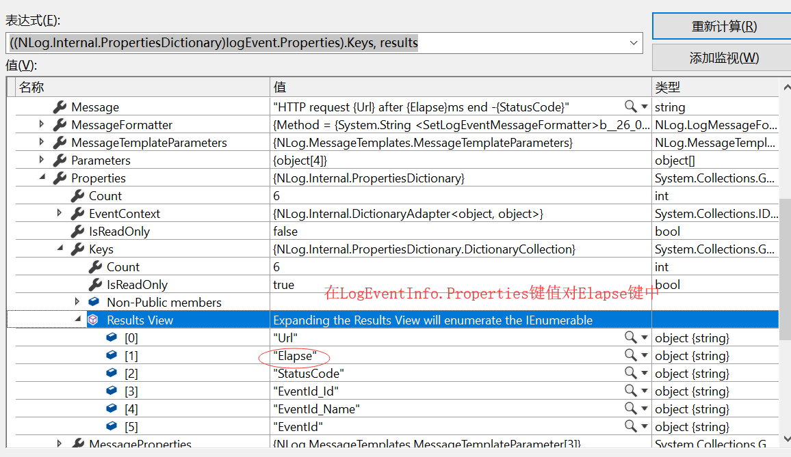

前文《解剖HttpClientFactory，自由扩展HttpMessageHandler》主要讲如何为HttpClientFactory自定义HttpMessageHandler组件,
现在来完成课后的小作业： 将重点日志字段显示到Nlog的LayoutRenderer上。
本文实现一个简单流畅的LoggingHttpMessageHandler，记录该HttpClient请求耗时，并显示到 NLog LayoutRenderer。
什么是Layout Renderer？
nlog日志上输出的特定字段，便于检索和分类。
配置nlog显示elapse Renderer
# 截取自 nlog.config配置文件
<target name="bce-request"
xsi:type="File"
layout="${date:format=yy/MM/dd HH\:mm\:ss} [${level}].[${logger}].[${threadid}}].[${elapse}]${newline}${message} ${exception:format=tostring}"
fileName="${logDir}/bce-request.log" encoding="utf-8"/> 19/12/08 22:46:29 [Info].[System.Net.Http.HttpClient.bce-request.LogicalHandler].[6}].[415.2504]
HTTP request http://localhost:5000/v1/eqid/e741e8d600151edc000000035decf3bf after 415.2504ms end -OK
19/12/08 22:47:15 [Info].[System.Net.Http.HttpClient.bce-request.LogicalHandler].[40}].[80.2951]
HTTP request http://localhost:5000/v1/eqid/2a41e8d600151edc000000028decf3bf after 80.2951ms end -OK
19/12/08 22:48:06 [Info].[System.Net.Http.HttpClient.bce-request.LogicalHandler].[43}].[36.8624]
HTTP request http://localhost:5000/v1/eqid/1a41e8d600151edc000000028decf3bf after 36.8624ms end -OK nlog所有的日志Render 都来自日志写入的信息， 因此我们在写入日志时附带该Renderer值， 然后配置nlog显示日志时提取该Renderer。
---------------------------------1-----------------------------
写入日志时，为Message传入参数{Url}, {Elapse}, {StatusCode}：
public class CustomHttpMessageHandler : DelegatingHandler
{
private readonly ILogger _logger;
public AttachTraceIdScopeHttpMessageHandler(ILogger logger)
{
_logger = logger ?? throw new ArgumentNullException(nameof(logger));
}
protected override async Task<HttpResponseMessage> SendAsync(HttpRequestMessage request,
CancellationToken cancellationToken)
{
if (request == null)
{
throw new ArgumentNullException(nameof(request));
}
var stopwatch = Stopwatch.StartNew();
var response = await base.SendAsync(request, cancellationToken);
stopwatch.Stop();
_logger.Log(LogLevel.Information, new EventId(101, "Request End"),
"HTTP request {Url} after {Elapse}ms end -{StatusCode}",
request.RequestUri, stopwatch.Elapsed.TotalMilliseconds, response.StatusCode);
return response;
}
}
--------------------------------2--------------------------------
有简单的lambda方式，这里我们采用稍微灵活的自定义类方式， 关键点是实现LayoutRenderer的抽象方法Append, 从LogEventInfo中提出Renderer值
[LayoutRenderer("elapse")]
public class ElapseLayoutRenderer : LayoutRenderer
{
protected override void Append(StringBuilder builder, LogEventInfo logEvent)
{
builder.Append(logEvent.Properties["Elapse"].ToString());
}
}
# 以上三个参数Url，Elapse，StatusCode都在LogEventInfo.Prpperties键值对中
--------------------------------3------------------------
按照文档的要求，尽量早点注册自定义Nlog LayoutRenderer
public static void Main(string[] args)
{
LayoutRenderer.Register<ElapseLayoutRenderer>("elapse");
......
}关于将该HttpMessgaeHandler 应用到HttpClientFactory，请参阅 《解剖HttpClientFactory，自由扩展HttpMessageHandler》思路，
本文主要目的为nlog 实现并添加自定义LayoutRenderer.